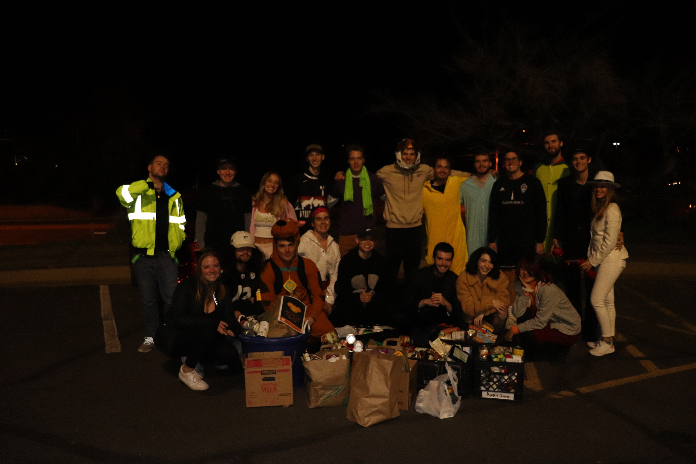

Fall Initiation begins soon! More information on the initiation page.
Engineering Futures are short trainings in the "soft skills" for Engineers. There are five modules: people skills, team chartering, group process, analytical problem solving, and effective presentations. Details can be found on the Tau Beta Pi Website.
The annual Trick-Or-Can community service project began in 1998 to collect food donations for local food banks and has been held every Halloween since then. This year we will be supporting Harvest of Hope Pantry. Members and candidates can dress up in costume and join us for a fun night of community service! For information on Harvest of Hope's needs, see their list of foods they need.
In addition to the projects listed in our calendar, candidates and members can sign up to volunteer with local organizations.
Engineering Ambassadors works with the Dean's Office and acts as a liaison between the College of Engineering, other colleges, and the general public. They meet every other Wednesday in ECOT 831 at 5:15.
Coder Dojo Boulder provides free coding workshops for youth in the Boulder area. Mentors can sign up to teach kids HTML & CSS, JavaScript, game development, and web programming. Meetings are Tuesdays in the late afternoon and last 1 hour.
The Butterfly Pavilion has a number of seasonal and year-round activities
Denver Botanic Gardens also has a variety of seasonal and year-round opportunities for volunteers
Important dates can be found on our calendar.
The "Big Issues Discussions" are meant to spur an open creative, cross-disciplinary, multi-generation sharing of ideas, suggestions, and backgrounds on some of the issues that our generation and society are either currently or may face. These may be problems that impact a local community, a culture, a generation, or broader groups of people. As engineering and technically minded people, it can be easy to be easy to focus solely on the problems immediately impacting our daily lives and work. But we are all well primed to take on the challenges presented by these bigger issues.
One of these "Big Issues Discussions" provides an dedicated opportunity to get together with friends, peers, mentors, and more to share, learn, and hopefully inspire or broaden our understandings.
Please see our 1 page instruction/ideas guide that offers guidance and recommendation for hosting a "Big Issues Discussion" within you own community.